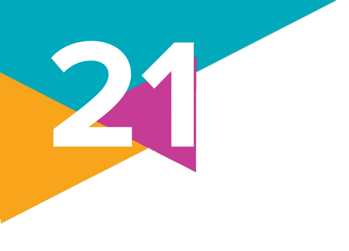
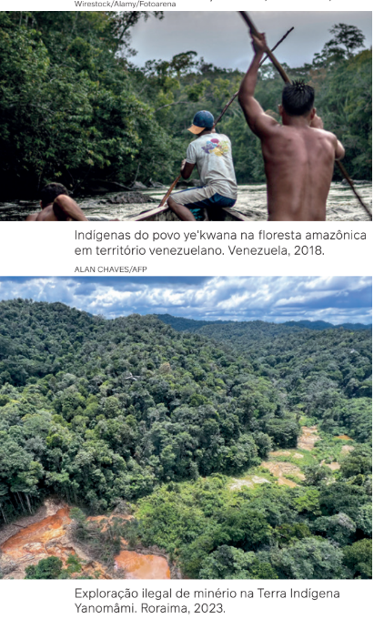

Dia dos Povos Indígenas: entenda por que 'dia do índio' é considerado pejorativo
[...] [O] dia 19 de abril [...] é o Dia dos Povos Indígenas no Brasil. A data é marcada pela
luta dos povos tradicionais por reconhecimento de direitos e respeito às tradições milenares.
A data era chamada de "dia do índio". Porém, a Lei 14.402, de julho de 2022, mudou a nomenclatura. Defensores das causas indígenas argumentam que a mudança foi de um termo genérico
para uma expressão que considera a diversidade dos povos indígenas que vivem no Brasil.
Para Márcio Kókoj Werá Popyguá, líder espiritual da Terra Indígena Mangueirinha, no Paraná,
a mudança reflete numa nova visão sobre os indígenas e retira o tom pejorativo da palavra "índio",
atribuída aos povos originários por quem, segundo ele, invadiu terras latino-americanas desde o
século XV.
"Esse termo 'índio' para nós não era bom. Há muitos anos a gente vinha tentando mudar isso
e, agora sim, temos povos indígenas para representar as etnias, o respeito às etnias, à questão da
originalidade do povo, ou seja, somos povos originários do Brasil", disse Márcio.
Para a cacique da Terra Indígena ilha da Cotinga, no Paraná, Juliana Kerexu Rete Marian, o
novo nome traz um debate importante sobre a forma como os indígenas são vistos na sociedade e
reforça a ancestralidade, uma vez que indígena tem significados etimológicos como "nascido ali" e
"originário".
"É um grande significado porque traz uma outra forma de entendimento para o não indígena, de
reconhecer também, entre aspas, 'qual é o lugar do indígena hoje?". [...]
GIOMBELLI, G. Dia dos Povos Indígenas: entenda por que 'dia do índio' é considerado pejorativo. G1, Foz
do Iguaçu, 19 abr. 2024. Disponível em: https://g1.globo.com/pr/oeste-sudoeste/noticia/2024/04/19/dia-dos
-povos-indigenas-entenda-por-que-dia-do-indio-e-considerado-pejorativo.ghtml. Acesso em: 27 jun. 2024.
O conceito de indígena
Um dos primeiros cuidados que se deve ter ao estudar os povos indígenas é reconhecer neles a capacidade de autodeterminação. Fazer isso passa, necessariamente, por reconhecermos o direito de cada um dos mais de 200 povos indígenas que vivem no território brasileiro de serem chamados pelo nome com o qual eles mesmos se identificam.
O nome “índio” surgiu com os colonizadores portugueses e espanhóis. Sabe-se que um dos objetivos das Grandes Navegações era encontrar uma nova rota de comércio com o Oriente. Quando os europeus desembarcaram no continente americano, no século XV, acreditaram ter chegado “às Índias” (atualmente, apenas Índia, país localizado no continente asiático). Para se referir aos nativos do território que acreditavam ser as Índias, os navegadores recém-chegados adotaram o termo “índios”. Contudo, antes da chegada dos europeus, os povos que habitavam os territórios que depois vieram a ser o Brasil e o continente americano não tinham um nome comum que os definisse. Pelo contrário, cada povo tinha sua própria denominação, que o diferenciava dos demais. Existiam, por exemplo, os pataxó, os tupinambá, os temiminó, os potiguara, e muitos outros.
Desde o início da colonização portuguesa houve muita especulação sobre a origem dos povos indígenas e até mesmo se eles eram seres humanos. A hipótese predominante em estudos tradicionais da Arqueologia é de que os povos que habitavam as Américas eram provenientes do continente asiático. Dessa forma, a teoria que se tornou mais comum é que eles teriam atravessado o estreito de Behring (localizado entre a Sibéria, na Rússia, no continente asiático, e o Alasca, na América do Norte) e se espalhado pelo continente cerca de 14 a 12 mil anos atrás. Por sua vez, pesquisas recentes questionam essas interpretações. Um exemplo é o trabalho da arqueóloga franco-brasileira Niède Guidon (1933-), que identificou vestígios na Serra da Capivara (Piauí) com datas acima de 35 mil anos, contrariando essa hipótese predominante. Para tornar essas interpretações ainda mais inconclusivas, estudos linguísticos, como os desenvolvidos pela linguista estadunidense Johanna Nichols (1945-), avaliaram o início do povoamento da América entre 30 e 35 mil anos atrás.
Entretanto, muitas pessoas ainda se referem a esses povos como “índios”. Existiria, de fato, muita diferença ao se usar a definição de “indígena”? Esses termos não seriam sinônimos?
Aprofundando o texto da reportagem de abertura, que trata dessas questões, o líder indígena e antropólogo Gersem dos Santos Luciano (1964-), conhecido como Gersem Baniwa, apresenta um debate sobre o uso desses termos. Ele pertence ao povo baniwa, que vive na fronteira do Brasil com a Colômbia e a Venezuela, e relata que, a partir de um determinado momento, o sentido originalmente errôneo e depreciativo da palavra “índio” foi sendo apropriado pelos próprios povos nativos do continente, com o objetivo de ressignificar e afirmar a sua unidade e a sua identidade numa perspectiva positiva. Esse processo, segundo o líder baniwa, fez parte do movimento indígena de configuração nacional que começou a se organizar na década de 1970, durante a luta de resistência pelo seu reconhecimento cultural e pela demarcação das suas terras.
Em suas
investigações,
Guidon
encontrou
vestígios
de queima
de madeira
datados com
48 mil anos
de idade.
Sua hipótese
é a de que
os primeiros
habitantes da
porção sul da
América teriam
cruzado o
Atlântico, vindo
de África.
Entretanto, a historiadora e militante indígena Márcia Mura, integrante do povo mura, que habita o atual estado de Rondônia, referenda a posição dos líderes indígenas entrevistados. Ela afirma que o uso recorrente do termo genérico "índio" por parte de alguns povos e principalmente no senso comum – além de ainda constar de documentos oficiais, trabalhos acadêmicos e de livros didáticos mais antigos – passou a ser evitado por muitos militantes do movimento neste século XXI. Segundo ela, esses povos, hoje, reivindicam o uso somente do termo "indígena", por significar "natural do lugar em que vive". Daí a importância da Lei no 14.402, de julho de 2022, que modificou essa nomenclatura em relação à data comemorativa.
A esse respeito, o antropólogo Eduardo Vieiros de Castro (1951-) afirma:
O ponto realmente fundamental na escolha da “comunidade” como sujeito da minha definição [...] é que o adjetivo “índio” não designa um indivíduo, mas especifica um certo tipo de coletivo. Nesse sentido não existem índios, apenas comunidades, redes (d)e relações que se podem chamar indígenas. Não há como determinar quem “é índio” independentemente do trabalho de autodeterminação realizado pelas comunidades indígenas [...].
CASTRO, E. V. de. “No Brasil, todo mundo é índio, exceto quem não é”. Povos Indígenas no Brasil, [s. l.],
2006. Disponível em: https://pib.socioambiental.org/files/file/PIB_institucional/No_Brasil_todo_
mundo_%C3%A9_%C3%ADndio.pdf. Acesso em: 19 ago. 2024.
Isso significa dizer que essas comunidades já existiam antes da chegada dos europeus e se identificam simbólica e culturalmente de forma diferente do restante da sociedade brasileira. Essa definição é muito semelhante àquela adotada no Estatuto do Índio (Lei no 6.001, de 1973) que define, em seu artigo 3º, indígena como:
[...] todo indivíduo de origem e ascendência pré-colombiana que se identifica e é identificado como pertencente a um grupo étnico cujas características culturais o distinguem da sociedade nacional.
BRASIL. Lei no 6001, de 19 de dezembro de 1973. Dispõe sobre o Estatuto do Índio. Brasília, DF: Presidência da
República, 1973. Disponível em: https://www.planalto.gov.br/ccivil_03/leis/l6001.htm. Acesso em: 23 ago. 2024.
Assim, o que percebemos é que esse conceito tenta diferenciar os indígenas da sociedade branca e essas marcas diferentes se caracterizam predominantemente em relação às suas culturas, línguas e raízes históricas. Vamos ver algumas dessas características mais adiante.
Hoje, a demarcação dos seus territórios ainda é a principal luta dos povos indígenas no Brasil, ou seja, a reivindicação junto ao Estado pelo reconhecimento de suas terras originárias que foram tomadas e ainda são disputadas por não indígenas desde 1500 até hoje.
Outra questão importante que precisamos refletir é que, em muitos livros de História, os estudantes e os atuais professores aprendem ou aprenderam algumas coisas sobre os povos indígenas somente em relação ao seu passado. Nas histórias contadas e escritas, os povos indígenas apareciam quase sempre a partir da chegada dos portugueses e espanhóis em nossas terras do oeste do Oceano Atlântico e depois sumiam. Sempre se contou uma história do passado, dando a impressão de que os indígenas são pessoas pertencentes a uma cultura congelada no tempo, como se eles não existissem mais, ou até existissem, mas isolados nas florestas.
A presença de professoras e professores indígenas lecionando tanto para crianças indígenas quanto não indígenas possibilita que a história e a cultura dos povos originários sejam apresentadas, discutidas ou mesmo vivenciadas na perspectiva desses povos.
Outras ideias e imagens que se aprendem desses povos é a propaganda da grande mídia,
principalmente na TV e no cinema, que retrata o indígena de forma folclórica e exótica, de pena
na cabeça, portando arco e flecha, e com roupas que se assemelham aos povos originários
estadunidenses.
Estudar os povos indígenas exige uma postura diferente, que não leva em conta apenas
seu passado, mas também o seu presente. A leitura do passado, por sua vez, não é a mesma
que nossos pais e avós aprenderam, mas sim a de um passado que não foi contado pelos
não indígenas, por ignorância ou de forma proposital. Sobre o presente, vamos descrever e
estudar – tomando como base os estudos desenvolvidos pela Etnologia Indígena, uma área da
Antropologia que estuda os povos indígenas – o que fazem esses povos, quais são suas lutas
e conhecimentos.
Além disso, ao contrário do que sempre vemos na mídia, esses povos não estão somente
em aldeias distantes nas florestas. Há grupos indígenas também nas cidades, trabalhando,
estudando, utilizando-se das novas tecnologias e, uma das coisas mais significativas, nossa
cultura brasileira é repleta de símbolos e modos de viver de origem indígena.
Muitos artistas indígenas desenvolvem trabalhos que reúnem elementos da música indígena e da música urbana, criando uma arte própria, como é o caso do rap indígena e de outras formas de expressão que demonstram como a cultura indígena está integrada na sociedade atual.
Narrativas equivocadas sobre os povos indígenas
A visão europeia sobre os povos indígenas, quando do primeiro desembarque dos portugueses no Brasil, reflete aquilo que já discutimos com base no conceito de etnocentrismo. Os europeus fizeram isso muito bem: afinal, até hoje a grande maioria dos conteúdos que aprendemos nas escolas nos apresenta uma visão eurocêntrica – ou seja, o etnocentrismo sob o ponto de vista europeu – sobre o nosso país.
Um exemplo nesse sentido é a afirmação frequente de que os indígenas são selvagens, ignorantes, ou que estão congelados no tempo, fadados ao desaparecimento, entre outros preconceitos.
Etnocentrismo designa a atitude de considerar a sua etnia como o centro ou eixo de tudo, a base que serve de referência ou ponto de vista de onde se deve olhar e avaliar o mundo ao redor. Qualquer etnia pode adotar essa atitude.
Falamos um pouco sobre o período colonial, a partir do século XVI, mas vejamos o que o Estado brasileiro defendia em tempos mais recentes.
Segundo o professor e historiador José Ribamar Bessa Freire, em 1900, Paulo de Frontin, engenheiro, que nessa época era presidente da Comissão do Quarto Centenário do Descobrimento do Brasil, fez uma afirmação pública na inauguração do Monumento ao Descobrimento do Brasil, na Praia do Russel, na cidade do Rio de Janeiro:
[...] “O Brasil não é o índio; os silvícolas, esparsos, ainda abundam nas nossas majestosas florestas e em nada diferem dos seus ascendentes de 400 anos atrás; não são nem podem ser considerados parte integrante da nossa nacionalidade; a esta cabe assimilá-los e, não o conseguindo, eliminá-los.”
FREIRE, J. R. B. Silêncios e Omissões [...]. Combate Racismo Ambiental, [s. l.], 12 jan. 2016. Disponível em: https://racismoambiental.net.br/2016/01/12/silencios-e-omissoes-por-jose-ribamar-bessa-freire/. Acesso: 30 jun. 2024.
O que fica evidente – nesse discurso e em outros que ouvimos nas ruas atualmente – é o incômodo em relação aos povos indígenas, relacionado à posse das terras e aos modelos de organização comunitária que esses povos defendem, o que se contrapõe ao modelo dominante em nossa sociedade. Sem resistência indígena, as terras passam a ficar disponíveis para o mercado.
Essa comparação com a dinâmica de exploração presente na sociedade capitalista fica evidente quando as sociedades indígenas são chamadas de "primitivas". Na verdade, segundo o antropólogo estadunidense Marshall Sahlins (1930-2021), trata-se de "sociedades afluentes", isto é, de abundância. Diferentemente do que ocorre no capitalismo, os membros dessas sociedades trabalham somente o necessário para suprir suas necessidades, não havendo vontade de acumular, e não por incapacidade ou preguiça, como o senso comum costuma afirmar.
A violência praticada contra esses povos e o preconceito que os meios de comunicação difundem contribuem para a desvalorização dessas populações que se quer dominar, desqualificando suas culturas, seus saberes, para depois desumanizá-los e tornar aceitável o seu extermínio físico, cultural e simbólico.
José Ribamar Bessa Freire, que é um dos especialistas a respeito da questão indígena no Brasil, nos traz uma reflexão sobre cinco ideias equivocadas acerca dos povos indígenas brasileiros.
• O primeiro equívoco que a maioria dos brasileiros tem sobre os indígenas é o de que eles constituem um bloco único, com a mesma cultura, compartilhando as mesmas crenças, a mesma língua. Ora, veremos no debate deste capítulo que existem diversas línguas e diversas etnias.
• O segundo equívoco é considerar as culturas indígenas como “atrasadas e primitivas”. Os povos indígenas produziram conhecimentos, ciências, arte, literatura, poesia, música e religião. Suas culturas, portanto, não são “atrasadas”, como durante muito tempo pensaram os colonizadores – e como ainda pensam muitas pessoas.
• O terceiro equívoco é a ideia do “congelamento” das culturas indígenas. Ou seja, entre muitos brasileiros há uma imagem de como deve ser o indígena: nu ou de tanga, no meio da floresta, com arco e flecha nas mãos, tal como foi descrito na carta de Pero Vaz de Caminha ao rei de Portugal. Essa imagem foi “congelada” pela visão do senso comum. Quando o indígena não se enquadra nessa imagem, vem logo a consideração de que ele não é mais indígena. O “indígena autêntico” seria aquele que perpetua as imagens da colonização.
• O quarto equívoco consiste em achar que os indígenas fazem parte apenas do passado do Brasil. Um passado “primitivo”, que não tem nenhuma contribuição a dar ao “progresso” da humanidade.
• Por último, o quinto equívoco diz respeito ao brasileiro não considerar a existência do indígena na construção de sua identidade. Ora, existem diversas contribuições dos povos indígenas para a formação do Brasil. Não é possível pensar a história do nosso país sem a participação dos povos indígenas, mesmo sofrendo um processo de quase extermínio físico e cultural.
As populações indígenas e seus territórios
Quando os portugueses chegaram nesta terra, os povos indígenas estavam organizados e divididos em diferentes grupos étnicos.
Referimo-nos nas Ciências Sociais ao conceito de grupos étnicos para identificar as diferenças físicas (cor de pele e dos olhos, tipo de cabelo, entre outros) e culturais (língua, costumes, formas de organização social, religiosidade, entre outros) entre os diversos povos que formam a humanidade.
Existem muitos estudos de antropólogos e historiadores que afirmam que, à época da chegada dos europeus, existiam milhões de indígenas. Alguns falam em 20 milhões, outros em 10 milhões, outros, ainda, em 4 ou 5 milhões. Não há consenso entre os especialistas, entretanto o etnólogo alemão Curt Nimuendajú (1883-1945) catalogou um montante de 1 400 povos, que eram divididos em grandes famílias linguísticas.
Os grupos primeiramente contatados foram os povos de línguas provenientes do tupi, localizados no litoral, que chamavam este território de Pindorama (Pindó Rama ou Pindó Retama), cujo significado é “Terra das Palmeiras”.
Quando os europeus chegaram por aqui, encontraram dezenas de povos. Se, em um primeiro momento, houve admiração e encantamento, anos depois, com a ocupação do território, vieram as doenças e a escravidão. As doenças eram a varíola, o sarampo, a tuberculose, a gripe, entre outras, que foram uma das principais causas da diminuição progressiva das populações indígenas até o século XX. O primeiro registro de varíola ocorreu em 1562, na Bahia, quando foram dizimadas aldeias inteiras dos Tupinambá.

O missionário francês Claude D’Abeville reproduziu a seu modo, em um relato publicado em 1614, as palavras de um velho chefe Tupinambá do Maranhão, mostrando como, aos olhos dos indígenas, a escravidão foi sendo imposta na sua relação tanto com os portugueses (os “peró”) como com os franceses: ‘Vi a chegada dos peró. Começaram eles como vocês, franceses, fazem agora. De início queriam apenas comerciar, sem morar aqui. [...] depois mandaram vir os padres, e estes levantaram cruzes. Mais tarde afirmaram que nem eles, nem os padres podiam viver sem escravos para os servirem e por eles trabalharem. [...] Não satisfeitos com os escravos capturados em guerra, quiseram também os filhos dos nossos e acabaram escravizando toda a nação; e com tal tirania e crueldade que os que ficaram livres foram forçados a deixar a região’.
FIGUEIREDO, C. História e cultura dos povos indígenas no Brasil. São Paulo: Barsa Planeta, 2009. p. 69.
Esse relato e muitos outros são importantes para nos lembrar que não somente os africanos escravizados foram vítimas da empresa colonial europeia. A escravidão indígena foi anterior e, inclusive, concomitante à africana.
No início da colonização, o contato com os europeus foi tratado como uma relação de troca e negociação de mercadorias – a mesma que se realizava no continente americano entre os diversos povos que aqui viviam. A partir do momento que os europeus começaram a empreitada da colonização, parte dos povos indígenas tentou fugir para o interior do país, passando a resistir de várias formas. Nem todos os povos fugiram; muitos foram dizimados, tendo suas línguas completamente extintas; outros tantos foram escravizados. Muitos também foram catequizados, passando a viver parcialmente “protegidos” nas missões comandadas pelos jesuítas.
Atualmente, existem 305 povos indígenas espalhados pelo Brasil, segundo os censos do Instituto Brasileiro de Geografia e Estatística (IBGE) de 2010 e 2022. Não constam nesses levantamentos os povos isolados – ou “resistentes”, como define Gersem Baniwa – que vivem na região amazônica e que ainda resistem aos contatos com a nossa sociedade. Portanto, temos poucas informações sobre quantos são esses povos, assim como suas línguas e organizações sociais. De qualquer forma, os últimos censos do IBGE apontam um crescimento da população indígena no país. Observe os gráficos a seguir.
Enquanto o total da população brasileira, em pouco mais de 30 anos, cresceu cerca de 38%, a população indígena aumentou em aproximadamente 317%. Apesar desse aumento, os indígenas correspondem a apenas 0,83% do total da população brasileira. Esses dados mostram, contudo, como os povos indígenas não serão extintos ou irão desaparecer, como se pensava décadas atrás.
Grande parte da sociedade passou a questionar: é possível uma comunidade virar indígena de uma hora para outra? Não, esse é um processo muito longo e histórico, visto que muitas dessas comunidades ocultavam suas línguas e suas práticas culturais ancestrais para se protegerem da violência das políticas de colonização branca e de tomada de suas terras.
Durante a Ditadura Civil-Militar, por exemplo, as transmissões de rádio em línguas indígenas foram proibidas, e os governos militares estimularam a educação dos indígenas em língua portuguesa, substituindo as línguas indígenas, mesmo em regiões onde essa população era maioria. Somente a partir da Constituição de 1988 os indígenas tiveram seus direitos linguísticos reconhecidos, o que permitiu que comunidades pudessem reconstruir suas histórias e iniciar um processo de reconhecimento étnico.
Veja um mapa com o percentual de população indígena em cada estado do país.
Podemos
perceber que
a população
indígena está
presente em todo
o Brasil e em
todas as capitais
dos estados.
No Censo demográfico de 2010, ocorreu um aprimoramento da pesquisa sobre populações indígenas, identificando os povos, suas línguas, além da população residente em suas terras e fora delas, com o acréscimo da pergunta: “Você se considera indígena?”. Essa mesma metodologia foi utilizada no Censo de 2022.
A maioria
das pessoas
autodeclaradas
indígenas
vive fora dos
territórios
demarcados.
Indígenas e o direito às terras: uma luta que continua
Deve-se registrar que o processo de reconhecimento dos direitos dos povos indígenas, conquistados com a Constituição de 1988, não significou o fim da sua luta. Até hoje os seus direitos – em especial, o direito ao reconhecimento e à demarcação das suas terras – têm sido objeto de questionamento e ataques por parte das classes sociais politicamente dominantes, com destaque para o agronegócio.
É nesse contexto que se deu o julgamento, pelo Supremo Tribunal Federal (STF), em 2021, do chamado marco temporal. Afinal, o que significa isso?
Consta no artigo 231 da Constituição:
São reconhecidos aos índios sua organização social, costumes, línguas, crenças e tradições, e os direitos originários sobre as terras que tradicionalmente ocupam, competindo à União demarcá-las, proteger e fazer respeitar todos os seus bens.
BRASIL. [Constituição (1988)]. Constituição da República Federativa do Brasil. Brasília, DF:
Presidência da República, [2016].
Esse artigo constitucional, juntamente com o Estatuto do Índio, de 1973, define o significado das Terras Indígenas (TIs). A Constituição Federal, ao estabelecer o princípio de que os povos indígenas são os primeiros ocupantes das terras, entende esse direito como anterior a qualquer outro. Assim, deveria ser garantido a esses povos, pelo poder público, independentemente do reconhecimento por lei. No entanto, setores vinculados à agropecuária, interessados na posse desses territórios, interpretaram que somente aqueles povos que ocupavam suas terras na data de promulgação da Constituição, em 5 de outubro de 1988, é que poderiam reivindicar esse direito. Daí a ideia de marco temporal. Por esse motivo, o STF foi provocado a julgar o tema, a partir de uma série de conflitos que eclodiram país afora.
Um primeiro conflito de grandes dimensões ocorreu ainda na década de 1990, logo após a aprovação da Constituição, envolvendo o processo de demarcação da Terra Indígena Raposa Serra do Sol, em Roraima, na fronteira com a Venezuela e a Guiana. Lá vivem povos indígenas distintos, que se subdividem etnicamente em patamona, makuxi, taurepang e ingarikó, da família linguística karib, além do povo wapichana, da família linguística aruak. Depois de muitas lutas, inclusive conflitos armados, somente em 2006 a União e o STF garantiram os direitos dos povos citados a esse território.
Contudo, o que forçou a necessidade de uma deliberação decisiva do STF sobre o marco temporal foi uma ação do governo de Santa Catarina, em 2003, apoiando agricultores que contestavam a criação da Terra Indígena Ibirama-Laklãnõ, dos povos xokleng, kaingang e guarani. Em setembro de 2023 – 20 anos depois, portanto –, o Supremo Tribunal Federal, por 9 votos contra 2, decidiu que a tese do marco temporal é inconstitucional, garantindo não só o direito dos povos indígenas daquela região específica que se encontrava sob julgamento, mas tomando uma decisão com abrangência nacional para quaisquer áreas de conflitos envolvendo a demarcação de terras indígenas.
E atualmente, qual é a situação das Terras Indígenas? Onde elas se localizam no país? Segundo o Instituto Socioambiental (ISA), uma organização da sociedade civil de interesse público (Oscip) que atua desde 1994 no desenvolvimento de projetos sustentáveis em parceria com comunidades indígenas e quilombolas, as Terras Indígenas ocupam 13,9% da extensão territorial brasileira, abrangendo um total de 1 179 574 km². Dessa extensão de TIs, 98,25% se encontram na região da Amazônia, na qual 430 áreas ocupam 23% desse território. No Brasil, existem 791 Terras Indígenas. O mapa a seguir mostra a distribuição dessas áreas, considerando as reservas já homologadas e as terras declaradas, identificadas ou em processo de identificação.
Fonte: IBGE. Atlas geográfico escolar. Rio de Janeiro: IBGE, 2023. Disponível em: https://atlasescolar.ibge.gov.br/brasil/3031-unidades-de-conservacao-federal/terras-indigenas.html. Acesso em: 22 ago. 2024.
Existem questionamentos provenientes de visões de mundo colonialistas e conservadoras,
com destaque para os interesses de expansão capitalista do agronegócio, em relação à
extensão das Terras Indígenas, em especial na Amazônia. A alegação, sempre repetida, é de que há
muita terra para poucos indígenas. No entanto, segundo o ISA, além de os indígenas se
sustentarem por meio dos recursos naturais existentes nessas terras, grande parte dessas áreas
não são agricultáveis ou sofreram impactos de diversos tipos, como a ocupação por posseiros,
a mineração clandestina e a extração ilegal de madeira.
Podemos acrescentar também como extremamente relevante o fato de as áreas de
reservas indígenas significarem a preservação e o manejo sustentável da floresta, evitando a
destruição desenfreada do meio ambiente pela expansão da fronteira agrícola e da pecuária. A
demarcação e a preservação das Terras Indígenas, portanto, é um direito fundamental desses
povos, significando o resgate e a manutenção da sua cultura e da sua sobrevivência diante de
uma realidade da sua história no Brasil.
Influências linguísticas e culturais dos povos indígenas no Brasil
Apesar de todo um processo histórico marcado pelo genocídio e tentativa do Estado
brasileiro de integração da população indígena e suas culturas, muitos povos indígenas resistem
na luta pela sua afirmação. O Censo 2010 contabilizou 274 línguas indígenas no Brasil. Mas
linguistas ligados às principais instituições de pesquisa do país estimam que haja entre 160 a
180 línguas faladas pelos indígenas brasileiros atualmente.
Fonte: FAMÍLIAS linguísticas indígenas no Brasil. Instituto Socioambiental, [s. l.], 2023. Disponível em: https://mirim.org/pt-br/lingua. Acesso em: 18 set. 2024.
Estima-se que, desde a chegada dos europeus, foram extintas 80% das línguas indígenas do continente. Muitos desses povos são poliglotas, ou seja, falam o português e uma ou mais línguas específicas.
Atualmente, estima-se que sejam faladas 160 línguas indígenas no Brasil, as quais foram identificadas como pertencentes a dois grandes troncos linguísticos – tupi e macro-jê –, existindo ainda línguas isoladas, ou seja, aquelas que não pertencem a nenhum tronco linguístico.
Vejamos o que diz Bruna Franchetto (1950-), antropóloga e linguista italiana radicada no Brasil e especialista em línguas indígenas:
[...] Assim como não há um índio genérico, mas muitas etnias indígenas distintas, também não há apenas uma língua indígena.
[...]
As línguas indígenas são línguas no sentido pleno do termo, como qualquer outra língua falada no mundo.
Não existem línguas mais pobres ou mais ricas; línguas com poucas palavras ou com vocabulário extenso; línguas sem gramática, ou com gramática simples, em oposição a línguas com gramáticas complexas; ou língua com sons esquisitos e outras com sons normais.
Não existe língua primitiva. Toda língua é completa e rica, servindo plenamente para todos os usos que dela se possa fazer.
FRANCHETTO, B. As línguas indígenas. In: MEC. Índios do Brasil 2. Brasília, DF: MEC: SEED: SEF, 2001. p. 9-10.
(Coleção Cadernos da TV Escola).
Algumas dessas línguas não se perderam ou ficaram isoladas. Por exemplo, nossa língua portuguesa falada e escrita incorporou e sofreu uma profunda influência das línguas dos povos originários das Américas. Vejamos alguns termos indígenas que usamos cotidianamente: aipim, arara, batata, capim, capenga, catapora, cuíca, guri, mandioca, mata, mingau, minhoca, peteca, pipoca, piranha, tatu, tucano, urubu, entre tantos outros.
Bessa Freire afirma que, numa das edições do dicionário Houaiss, existem cerca de 45 mil palavras de origem indígena, em um total de 228 mil verbetes.
Também são inúmeros os lugares, as cidades, as instituições e nomes de pessoas que adotam nomes de origem tupi e outras línguas, tais como: o estado do Paraná, a Rua Visconde de Pirajá, o viaduto do Anhangabaú, o estádio do Maracanã, as cidades de Piracicaba (SP), Aracajú (SE), Gravatá (PE), Niterói (RJ) e tantas outras. Ao todo, como lembra a pesquisadora Raquel F. A. Teixeira, 70% do vocabulário do português brasileiro sobre animais e plantas provém do tupi-guarani, que tem vasta influência no nome de cidades e acidentes geográficos no país.
Aliás, você conhece alguém que se chama Moacir, Thaynara, Janaína, Maíra, Mara, Tainá ou Cauã? Pois é, se conhece, converse com a pessoa se ela sabe a origem do seu nome.
Precisamos ainda recordar alguns hábitos cotidianos que temos e que são de origem indígena. É o caso do uso do pilão, da peneira e dos balaios. Na cozinha, o uso das gamelas e das panelas de barro. O mais interessante, para quem não sabe: tomar banho diariamente, andar descalço em casa ou ficar de cócoras são todos hábitos da tradição tupi-guarani.
Conhecimentos medicinais indígenas
Muitos ignoram o profundo conhecimento indígena sobre doenças e práticas medicinais.Por essa razão, nos últimos anos, os estudos sobre povos indígenas deixaram de atrair o interesse somente de antropólogos e começaram a se tornar tema de estudos de químicos, biólogos e médicos. Vamos refletir sobre isso com base em um relato de um ex-professor da Universidade Federal do Rio de Janeiro:
Em janeiro de 2009, uma indígena de 12 anos, da etnia tucano, foi picada no pé direito por uma jararaca na região do Alto Rio Negro, na fronteira de Amazonas com a Colômbia, onde não há luz elétrica nem posto médico, e a cidade mais próxima dista 14 horas de lancha. “Eu queria que ela recebesse o soro e depois fosse tratada em casa mesmo, como já fizemos com outras pessoas da tribo”, narra o pai, “mas os médicos se desesperaram e quiseram mandá-la ao hospital em Manaus”.
Armou-se aí um conflito. Internada num pronto-socorro infantil, a criança passou por cirurgias para retirar os tecidos necrosados pelo veneno da cobra, ao mesmo tempo em que a direção do hospital barrava a entrada do pajé, levado pelo pai, assim como a realização de rituais e a aplicação de ervas curativas. Mas o diagnóstico médico era pessimista: seria necessário amputar a perna da menina para evitar infecção generalizada.
Inconformados, os índios tucanos recorreram à Procuradoria da República e, depois da passagem por uma casa de saúde indígena, conseguiram a internação da criança no Hospital Universitário, cujo diretor propôs a combinação do tratamento médico convencional com os rituais e as ervas indígenas, ministrados pelo pajé. Em três dias de tratamento simultâneo, segundo a imprensa, a criança deixou de ter febre, e logo cresceu a pele, cobrindo os ossos do pé, antes expostos pela ferida. A amputação foi descartada.
SODRÉ, M. Reinventando a educação: diversidade, descolonização e redes. Petrópolis: Vozes, 2012. p. 23.
Esse episódio, narrado pelo sociólogo e jornalista Muniz Sodré (1942-), evidencia a resistência que os saberes tradicionais, entre eles os milenares conhecimentos indígenas sobre Medicina, sofrem em serem considerados como saberes tão embasados em evidências empíricas quanto os conhecimentos científicos produzidos pelas sociedades ocidentais.
Recentemente, o povo matsés, que vive nos territórios do Brasil e do Peru, criou uma enciclopédia de 500 páginas sobre sua Medicina tradicional. Ela foi escrita por cinco xamãs com a ajuda do grupo de conservação Acaté, organização que luta pela preservação das culturas e dos povos da Floresta Amazônica. Essa obra detalha cada planta utilizada pelos matsés como remédio para curar uma enorme variedade de doenças.
O conteúdo dessa enciclopédia, no entanto, não é uma novidade na história dos povos indígenas. O conhecimento das plantas medicinais foi sempre muito rico e diversificado. Entre muitos povos existem ervas, plantas ou algumas beberagens terapêuticas destinadas às curas de muitas doenças. Algumas delas, inclusive, foram incorporadas pela Medicina mundial, como a ipecacuanha (Cephaelis pecacuana), recomendada contra diarreias sanguinolentas, ou a quina (Cinchona ledgeriana), que age na cura da malária.
Práticas e saberes para a saúde indígena
Ecologia de saberes é um conceito desenvolvido pelo sociólogo português Boaventura de Sousa Santos (1940-) que se fundamenta no reconhecimento da diversidade e da pluralidade dos conhecimentos heterogêneos, incluindo a ciência moderna e outros tipos de saberes e práticas, como os conhecimentos indígenas e quilombolas. A ecologia de saberes considera o conhecimento como interconhecimento, isto é, ele se constrói e se expande por meio das interações sustentáveis e dinâmicas entre os diferentes saberes (científicos, artísticos, populares, tradicionais, entre outros), sem, no entanto, abandonar seus próprios.
No caso das populações indígenas, o Sistema Único de Saúde (SUS) reconhece a importância e a necessidade de um tratamento especializado para a saúde indígena, no que diz respeito à organização, gestão e execução dos serviços. De acordo com o Programa Articulando Saberes em Saúde Indígena (Passi), elaborado pela Secretaria de Saúde Indígena (Sesai) e pelo Ministério da Saúde, a diversidade das medicinas tradicionais indígenas exige diferentes estratégias de articulação entre o sistema oficial de saúde e os saberes e práticas indígenas que devem ser desenvolvidos localmente, tendo como base um diálogo intercultural com as comunidades indígenas. Ressalta-se, ainda, a impossibilidade de se optar por um modelo único de atenção diferenciada à saúde indígena, dada a diversidade das medicinas tradicionais. Desse modo, faz-se necessário desenvolver múltiplos modelos interculturais de atenção diferenciada que atendam a diferentes povos e comunidades distribuídos pelo país. Contudo, ainda há um longo caminho a ser percorrido em relação à integração desses saberes.
Em 2018, um estudo realizado com três etnias indígenas localizadas na divisa do Brasil com o Peru e a Colômbia investigou as principais queixas relacionadas às dores dos indígenas e as terapias utilizadas para o tratamento delas. Essa pesquisa buscou compreender também a atuação dos agentes de saúde no atendimento a essas populações. Segundo a pesquisadora Elaine Barbosa de Moraes, entre os indígenas entrevistados que recorriam à Medicina convencional para o tratamento da dor – utilizando medicamentos como anti-inflamatórios, relaxantes musculares e corticoides, conhecidos entre eles como “remédios do branco” – apenas 22,2% consideraram o tratamento eficaz. Em contraste, entre os que utilizaram a medicina tradicional indígena, como benzimentos, cantos, banhos, pajelanças, rezas, fumaça, veneno de sapo e picadas de formiga, 64,4% relataram melhoras da dor. Ainda, de acordo com essa pesquisa, 73% dos participantes disseram que a dor não é investigada pelos profissionais de saúde que prestam atendimento às três etnias entrevistadas.
Moraes e a pesquisadora Eliseth Ribeiro Leão argumentam que, se houvesse um acompanhamento mais adequado, com profissionais de saúde mais qualificados, dotados de conhecimentos em relação à saúde indígena e suas dores, possivelmente, o alívio da dor com o uso da Medicina convencional poderia ser maior. Elas defendem a sistematização dos saberes indígenas por meio de políticas públicas. Assim, as pesquisadoras elaboraram uma cartilha com informações e recomendações para o manejo da dor, baseada nas práticas culturais da Medicina tradicional indígena, com o intuito de promover o diálogo entre esses saberes e, assim, atender melhor à população indígena.
Modos de vida e formas de resistência indígena
Ao contrário da cultura branca, para muitos povos indígenas não existe divisão entre a dimensão da natureza e a dimensão humana, porque elas estão inter-relacionadas. Para alguns desses povos, tudo é vivo, tudo tem uma mensagem. Em muitas comunidades, por exemplo, a árvore não é apenas uma árvore, mas uma entidade que liga o céu e a terra (sua copa e suas raízes). Ou como diz a música Txai, cantada por Milton Nascimento: “Tudo se chama nuvem, tudo se chama rio” (CD Txai, 1990), ou seja, as pessoas são interligadas com a natureza, em laços íntimos e essências. Essa visão é milenar entre muitos povos indígenas, mas só recentemente é que a ciência ocidental descobriu esse aspecto (por meio das ciências da terra, como Física, Biologia e Ecologia).
Outra característica das populações indígenas é a forma como organizam suas comunidades. De acordo com Gersem Baniwa, cada povo indígena tem um modo de organizar suas relações sociais, políticas e econômicas, em geral, por meio de relações de parentesco ou afinidade política ou econômica. Portanto, essas comunidades aglutinam um número de pessoas e de famílias muito maior do que uma família tradicional europeia. Uma família extensa indígena geralmente reúne a família do patriarca ou da matriarca, as famílias dos filhos, dos genros, das noras, dos cunhados e outras famílias afins que se filiam à grande família por interesses específicos.
Indígenas da etnia baniwa confeccionando cestos com fibra de arumã. Parque Indígena do Xingu, São Félix do Araguaia (MT), 2024.
[...] Entre os índios, não adianta ser bom pescador (provedor de alimentos) e trabalhador (casa é o símbolo da qualidade) se não for solidário. Este é o principal ensinamento que o jovem iniciante recebe depois de ter passado dias em jejum e no isolamento no mato, caçando, pescando e realizando, o mais que puder, a coleta de frutas nativas sob a rigorosa orientação do seu instrutor (pajé), as quais irá oferecer integralmente aos membros de toda sua comunidade e aos convidados, como gesto concreto de solidariedade e espírito comunitário, durante a festa final. Desta forma, percebemos que as sociedades indígenas, diferente da visão convencional dos economistas, sempre praticaram o excedente produtivo não cumulativo. Não é um excedente que visa à acumulação de bens ou de riquezas, mas sim ao cumprimento de valores sociais e morais. Os Yanomami, por exemplo, costumam realizar longas caçadas e, quando estas são bem-sucedidas, convidam outras comunidades, às vezes até da Venezuela, para participarem dos resultados da caçada. Mesmo a caçada bem-sucedida de um dia costuma
BANIWA, G. dos S. L. O índio brasileiro: o que você precisa saber sobre os povos indígenas no Brasil de hoje. Brasília, DF: Ministério da Educação, 2006. p. 194-195.
Como já destacamos anteriormente, nem todo indígena vive nas aldeias ou na mata. Eles também vivem nas cidades, usam celulares e computadores, frequentam a escola e se formam em diferentes profissões; alguns se tornam políticos, mas nem por isso deixam de pertencer a comunidades indígenas, como é o caso de Sônia Guajajara (1974-), do povo guajajara/teneteara, que habita a Terra Indígena Arariboia, no Maranhão. A ativista atuou como coordenadora da Articulação dos Povos Indígenas do Brasil (APIB), e que foi candidata a vice-presidência da República em 2018. Em 2022, foi eleita uma das 100 pessoas mais influentes do mundo pela revista estadunidense Time. Sônia, pela sua militância, passou a ocupar o cargo de ministra de Estado dos Povos Indígenas, em 2023, acompanhada por outras lideranças importantes do movimento indígena. No mesmo ano, pela primeira vez na sua história de 55 anos de existência, a Fundação Nacional dos Povos Indígenas (Funai), órgão federal responsável pela política indigenista do país, passou a ser presidida por uma mulher indígena, a advogada Joênia Wapichana (1973-), uma das lideranças da luta pela demarcação da Terra Indígena Raposa Serra do Sol.
Outra liderança indígena que tem se destacado no Brasil nos últimos anos é o pensador, ambientalista e escritor Ailton Krenak (1953-), nascido na região do vale do rio Doce, entre Minas Gerais e Espírito Santo, território do povo krenak devastado pelo crime ambiental provocado pelo rompimento da barragem de Mariana (MG), em novembro de 2015. Ailton Krenak teve papel protagonista durante o processo de aprovação dos direitos indígenas consagrados na Constituição Federal de 1988. Suas palavras ganharam relevância também durante a epidemia de covid-19, em textos-denúncia, como os livros Ideias para adiar o fim do mundo e O amanhã não está à venda. Apesar da crise mundial que então vivíamos, e para além da reflexão sobre os males do consumismo e da ganância capitalista, Krenak fazia questão de apresentar uma perspectiva otimista, inspirada nas concepções de mundo e cosmologias indígenas.

Em abril de 2024, Ailton Krenak se tornou o primeiro indígena a assumir uma cadeira na centenária e eurocêntrica Academia Brasileira de Letras, instituição com sede no Rio de Janeiro. Fazendo menção aos 305 povos indígenas existentes no país, em seu discurso de posse, Krenak ressaltou a importância da oralidade presente nas diversas culturas originárias e criticou o etnocentrismo reinante, esperando que a sua eleição represente uma “virada de página” na história da Academia.
Portanto, aquela velha visão de que o indivíduo só pode ser indígena porque tem cabelo preto e liso, pouco pelo no corpo, só vive no mato e não usa roupa, é preconceituosa e limitada, por reproduzir o senso comum. Como vimos, os povos indígenas estão presentes em todos os estados do Brasil e em várias grandes cidades. Assim como outros povos (brancos, negros, asiáticos), eles se relacionam com outras culturas. E, assim como todos nós, trocam e se misturam culturalmente, sem perder a sua identidade.
O caso dos yanomâmis
Os yanomâmis são um povo que habita o norte da Amazônia brasileira, na fronteira com a Venezuela, e cujo nome significa, segundo os estudos antropológicos, “seres humanos” – em oposição aos animais, a seres invisíveis e aos considerados inimigos, como os estrangeiros, em geral, incluindo os brancos. Eles podem ser caracterizados como uma sociedade de caçadores-agricultores cujo território compreende cerca de 9 milhões e 665 mil hectares, reconhecidas oficialmente em 1992 como reserva de proteção da biodiversidade amazônica, passando a configurar com o título de Terra Indígena Yanomâmi (TI Yanomâmi). Sua população total, em 2023, era de 31.223 habitantes.

Apesar de várias ações governamentais que procuraram inibir o garimpo ilegal nessas terras, nos anos que se seguiram e, mais recentemente, no início de 2023, a mídia mundial repercutiu a grave crise humanitária que vem devastando o povo yanomâmi nos últimos anos, em função da rápida expansão das atividades de mineração em suas terras. Dados apurados pelas organizações que atuam na defesa da Amazônia e das reservas indígenas, como a Hutukara Associação Yanomâmi (HAY), apontaram um crescimento de 309% no desmatamento de 1.236 hectares em razão das atividades do garimpo no período compreendido entre outubro de 2018 e o final de 2022. A expansão da atividade de garimpo vem resultando na proliferação de doenças como malária, pneumonia, além da grave contaminação pelo mercúrio utilizado na separação do ouro.
Os yanomâmis apresentam grande diversidade cultural e linguística, com a existência de seis subgrupos pertencentes à mesma família linguística, conforme relata o antropólogo francês Bruce Albert (1952-) em pesquisas recentes. O Instituto Socioambiental apresenta o quadro completo com a relação dos subgrupos e suas diferenças em termos de linguagem, além da existência, na reserva, de mais seis grupos yanomâmis que permanecem isolados do contato com os homens brancos, e de uma comunidade da família linguística karib, o povo ye'kwana.
Desde o final da década de 1980, em função de projetos de ocupação da Amazônia implementados pela Ditadura Civil-Militar, parte das comunidades yanomâmis de Roraima começou a sofrer as consequências da descoberta de ouro em sua região. Houve uma mortandade logo no primeiro contato, durante o projeto de construção da rodovia Perimetral Norte. Logo depois, entre 1988 e 1990, as mortes vitimaram cerca de 15% do povo yanomâmi, com a chegada de quase 40 mil garimpeiros, trazendo consigo extrema violência e espalhando diversas doenças, como a malária, e outros graves problemas sociais e ambientais.
Esse cenário desolador em nada se compara com aquele vivenciado anos atrás pelo antropólogo Bruce Albert:
Quando conheci os yanomami, totalmente isolados, havia uma fartura enorme: festa atrás de festa. Tinha tanta banana, caça o tempo todo, muita comida. Nunca comi tão bem quanto junto aos yanomami. Colhiam 300 tipos de frutas diferentes, 32 tipos de mel, animais de caça de todo tipo e tamanho cuja qualidade da carne varia o gosto em função das estações. Ou seja, tem um requinte na comida deles; uma riqueza degustativa, alimentícia e uma fartura enorme.
Agora, eles vivem em situação de má nutrição e o governo tem que enviar cesta básica porque os garimpeiros destruíram a floresta. O barulho das máquinas afasta a caça, os rios viraram um mar de lama e não dá mais para pescar. Todo mundo está doente e não plantam mais roça. Ou seja, provocou-se uma desestruturação total no modo de subsistência tradicional e depois se diz que os coitados são malnutridos, os selvagens não trabalham e é preciso enviar latas de sardinha. Minha primeira reação em relação à má nutrição dos povos indígenas é dizer que isso não existe na origem; é produzido pela destruição que impomos aos seus territórios e modos de vida.
ALBERT, B. Povo yanomâmi: "A floresta não é uma coleção de árvores, mas um universo de povos vivos". Entrevista especial com Bruce Albert. Entrevistadora: Patrícia Fachin. Instituto Humanitas Unisinos, São Leopoldo, 31 jul. 2023. Disponível em: https://www.ihu.unisinos.br/categorias/159-entrevistas/ 629287-povo-yanomami-eles-me-deram-uma-formacao-humana-e-intelectual-entrevista -especial-com-bruce-albert. Acesso em: 6 abr. 2024.
Esse quadro já vinha sendo alertado há bastante tempo pelo escritor, xamã e líder indígena Davi Kopenawa Yanomâmi, como ele afirma em seu livro com Bruce Albert, A queda do céu: “Os brancos vão fazer adoecer a terra e o céu”. Ele se refere não somente à destruição das florestas, mas também às epidemias – como a de covid-19 que assustou o planeta a partir de 2020 – e à crise climática cada vez mais acentuada. Kopenawa ressalta que, apesar de os brancos afirmarem que “a terra é muito grande e tem pouco índio”, em uma referência ao tamanho da Terra Indígena Yanomâmi, o que está acontecendo é exatamente o oposto:
O pouco índio está sustentando o planeta Terra. Sem índio, não vai ser sustentado, vai afundar, porque o pajé está segurando a queda do céu para não cair em cima da gente. O pajé está segurando para equilibrar. O nosso trabalho, do pajé yanomami, é outra coisa. O trabalho é para proteger o povo da terra. O pajé yanomami não está ganhando dinheiro, não está roubando terra do outro. A grande alma da Amazônia, junto com meu povo, junto com os xapiri pë [espíritos auxiliares], junto com o nosso criador Omama, está sustentando a nossa floresta Amazônica. Nós sempre falamos isso. Falamos muito, não é só agora que estamos falando não. Agora nós estamos falando mais e mais, até o branco da cidade, o povo da mercadoria, entender, escutar e respeitar.
KOPENAWA, D. É o 'pouco índio' que está sustentando o planeta Terra, avisa Davi Kopenawa. [Entrevista cedida a] Paulina Chamorro. National Geographic, [s. l.], 3 set. 2021. Disponível em: https://www. nationalgeographicbrasil.com/cultura/2021/09/amazonia-entrevista-davi-kopenawa -yanomami#:~:text=O%20pouco%20%C3%ADndio%20est%C3%A1%20sustentando,cair%20em%20 cima%20da%20gente. Acesso em: 6 abr. 2024.